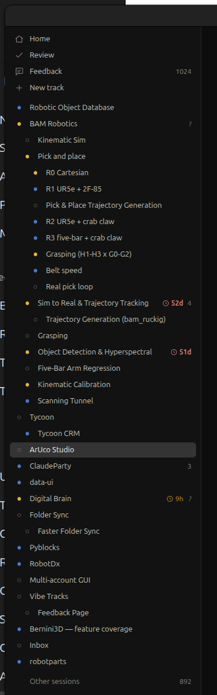
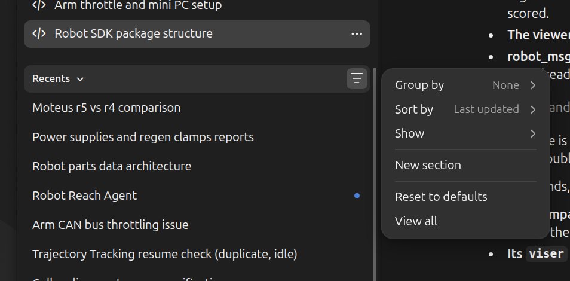
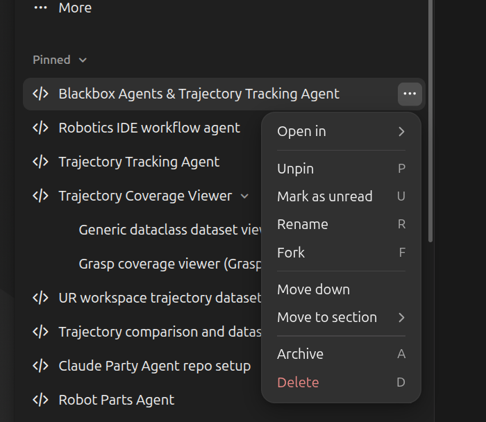

Vibe Tracks is just a sidebar.
Over the black-box agent repos on this machine. Click a track and you see that box's own site, live. Above the tracks: Home, Review and Feedback across all of them. The sidebar is a pixel-perfect copy of the Claude desktop app's, so there is nothing new to learn.
All vieb tracks now is though is just a side barZach, Nov 24 2026
Its nice not having to relearn new UIs.Zach, Nov 24 2026
The spec
Every item is something Zach asked for, in his words, frozen as ruler v1. The objective is how many shall items a version of Vibe Tracks still fails, measured in a headless browser against fixture boxes. An item with no check counts as failing.
The reference
Vibe Tracks' sidebar today (left), and Claude's two menus it copies: the view menu over the list and the ··· menu on a row. These screenshots are the spec for S2.3 and S2.6.



vibetracks.toml. Zach first suggested each agent define one with its
parent and children, then: "None of the agents should have a vibetracks.toml / each agent is compeltely indpdent
and self contained. / Its vibe tracks that basically like defines that parent child relationship." So a box
holds nothing for Vibe Tracks (S1.2), Vibe Tracks owns the tree (S1.3), and the tree moves by drag on a stock tree
component (S2.8; the pick is Headless Tree's core, which draws nothing, so Claude's rows stay).
Open tensions
Defaults taken so the ruler could freeze; each is Zach's to overrule (OBJECTIVES §10).
- Hover chevron (Oct 16) vs pixel-perfect Claude (Nov 24). Claude's rows have no hover fold chevron. Default: Claude wins; S2.9 is a should.
- Built-in sync and an account (Oct 25) vs local boxes (Nov 24). Default: a box travels by its own git remote; the tree file is per machine.
- "I haven't found the vibetracks thing to be that helpful" (W2 retro). v1 scores the spec only; an observed use number is the ruler v2 candidate.
- Delete removes a track from Vibe Tracks only; a box's folder and repo are never deleted from the sidebar.
- Rename changes Vibe Tracks' label only; a box's title stays its README's.
- Publish is private unless
--public: a first public push is a step nothing undoes.